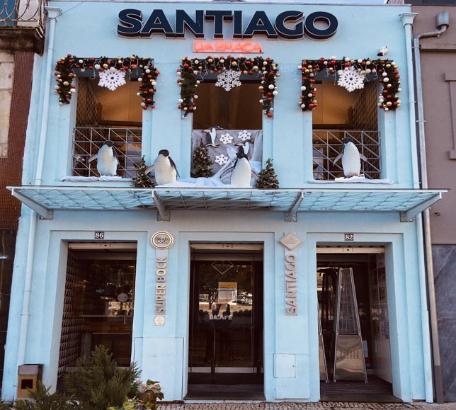
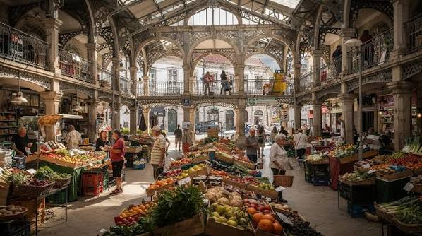
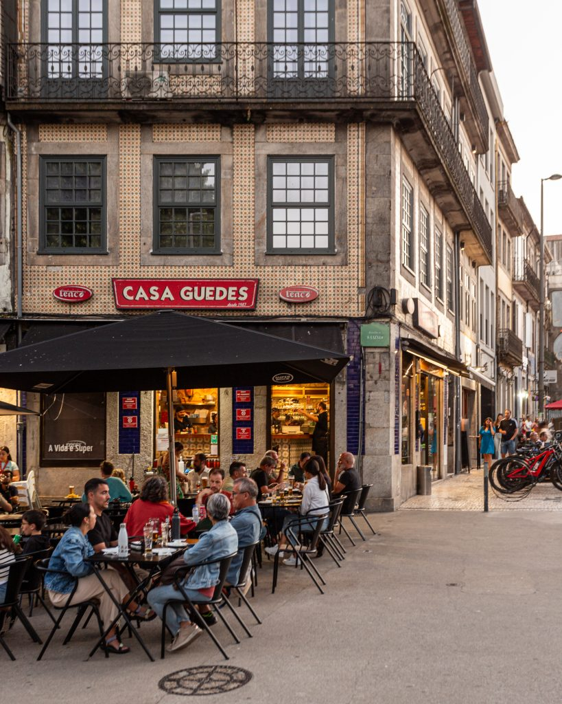

Porto Restaurants & Francesinha Spots
Indulge in Porto’s legendary culinary scene, from authentic Francesinha sandwiches to fresh Atlantic seafood and local petiscos.

Best FrancesinhaCafé Santiago
Widely regarded as serving Porto’s finest traditional Francesinha — a rich meat sandwich topped with melted cheese, fried egg, and secret spicy beer sauce.
- R. de Passos Manuel 226, Porto
- €10 – €14 per dish

Historic MarketMercado do Bolhão
Recently restored historic two-story market hall brimming with fresh fruit, cheeses, cured meats, fresh oysters, wine bars, and local food stalls.
- R. Formosa 322, Porto
- Free entry | Food snacks €2 – €10

Student FavoriteCasa Guedes
Legendary casual eatery renowned for its juicy slow-roasted pork leg sandwiches (Sandes de Pernil) loaded with gooey Serra da Estrela sheep cheese.
- Praça dos Poveiros 130, Porto
- €4 – €8 per sandwich
Erasmus Local Tip
A Francesinha is huge and very filling (it comes topped with cheese, eggs, sausages, and fries)! If you're on a student budget or have a lighter appetite, split one with a friend or ask for a "meia Francesinha" (half portion) at traditional tascas. Order a draft Super Bock beer (called a príncipe in Porto) to match!